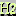
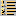

|
|
Some characters can be combined to provide ISO-Latin-1 characters with a standard (e.g. North American) keyboard.
The optional input method (Multi-Key) is based on a two key sequence beginning with the "accent" followed by the "letter". For example to obtain a 'ã' first press '~' then type 'a'. To obtain a '~' you have to press '~' twice. The table below lists all available key sequences:
| accent-letter | ~ | ` | ' | " | * | ^ |
| a A | ã Ã | à À | á Á | ä Ä | å Å | â Â |
| c C | ç Ç | |||||
| e E | è È | é É | ë Ë | ê Ê | ||
| i I | ì Ì | í Í | ï Ï | î Î | ||
| n N | ñ Ñ | |||||
| o O | õ Õ | ò Ò | ó Ó | ö Ö | ø Ø | ô Ô |
| u U | ù Ù | ú Ú | ü Ü | û Û | ||
| y Y | Ý | ý Ý | ÿ |
By default, this input method is disabled. It's possible to dynamically enable and disable the multi-key input method by using the menu Special->Preferences->General.
To obtain a non-breakable space ( ) with Amaya you have to hit the Control key with the Space key.
The simplest way to create new elements in a document is to move the insertion point to the desired position and to use the Types menu or the buttons corresponding to the most common elements (image, headings, lists, etc.). These buttons and menu items create the corresponding element at the current position.
In some cases, the desired element cannot be created exactly at the position chosen, because of the constraints imposed by the HTML DTD. Amaya then tries to create the element at the closest position where it is allowed. For instance, if the insertion point is at the end of the last line of a paragraph when you click on the  button, Amaya does not create the new heading at that particular position (which would be invalid), but after the paragraph (which is probably what you intended).
In some other cases, Amaya changes the existing structure
for creating the desired element. If the insertion point is somewhere within a
list item (LI) when you create a second level heading (for
example with the button, or from the
menu), the list item and its enclosing list are automatically split, in order
to create the requested heading at the chosen position and to comply with the
HTML DTD.
When creating new elements, it is important to select an insertion point, not some text nor a single character: if the current selection is not empty, Amaya tries to transform the selected part into the element type chosen.
Some documentation of how to use element types is available, as well as a briefly annotated list of all the HTML 4.0 elements.
The Types menu allows you to create
only elements that are part of the document BODY. To create
elements in the document HEAD, use the Structure
menu from the Structure view. This menu
works in the same way as the Types menu: put the caret at the
desired position and choose the element type from the
Structure menu.
The Structure menu also allows you to create comments, using its Comment entry. Comments are shown only in the Structure view, but they can be inserted at any position in the document.
Some HTML elements are constituted by several other elements of different
types. For instance, a table contains usually a caption (CAPTION)
and several rows (TR) and several cells (TD or
TH) in each row.
When Amaya creates such elements, it also creates their components. A table is created with a caption and a row containing a single cell. The insertion point is placed automatically in the first of these components. You can enter the content of that component immediately or later. You can move to the next (empty) component with the mouse or with the arrow keys.
When you are writing a new document or a new part in a document, you often create elements sequentially. To do that, just press the Enter (or Return) key. The current element is terminated and a new one is created just after. This applies obviously to paragraphs, but also to other types of elements, such as headings or table cells for instance.
Most often, the new element created is simply a paragraph, whatever the type of the previous element. If you need another element type, you can immediately change the type of that element, by selecting the desired type in the Types menu or by clicking on the corresponding button, but you can also keep typing and change the type later.
When the insertion point is in an empty element, pressing the Enter key replaces that element by another empty element at the next higher level in the document structure. This feature allows you to create complex nested structures very quickly.
As an example, consider the following structure:
A paragraph in the first item.
To create that structure, create first a numbered list with a first item (for example by clicking on the  button) and type in the first line. At the end of that first line, press the Enter key: it creates a new paragraph in the item. At the end of this paragraph, press the Enter key: it creates yet another paragraph, but pressing the same key again replaces that paragraph by an empty item 2. At the end of the first line of item 2, create a new list with its first item (for example click on the button). The new list will automatically be nested. Item b. is created by a double Enter at the end of item a. When the insertion point is at the end of item b, create item 3 by four successive Enters. To create the paragraph that follows these lists, press Enter three times when the insertion point is at the end of item 3.
The Enter key works in the same way when the insertion point is at the beginning of an element, but it creates new elements before the current element.
For instance, you can add an initial paragraph in a list item by moving the insertion point before the first character of that item and pressing Enter. If you press Enter twice, you get a new item before the current item. This is useful for inserting a new item before the first one.
This use of the Enter key does not apply only to lists and paragraphs, but to all elements. It is for instance very convenient for creating tables.
When a paragraph or another block of text is styled - terminated by an anchor or a character string in bold, italic or other such style - moving the insertion point to the end and typing appends characters to the anchor or the styled string. If you want to exit this styled element and enter plain text, just press Enter and continue typing.
The same method can be used to enter plain text at the beginning of a block starting with an anchor or styled characters.
You can edit the document title (TITLE element) in the Title field of the main window. When the new title is OK, you must validate it by pressing the Enter key. You can also edit the document title in the structure view.